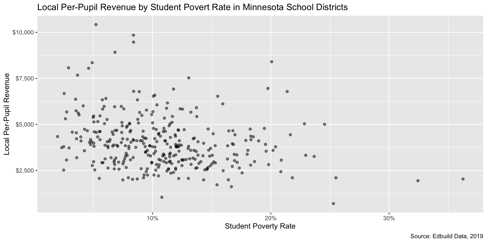
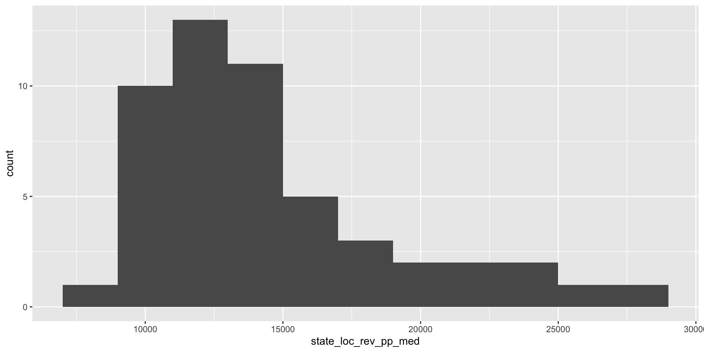

library(edbuildr)
edbuild_fin_fy19 <- masterpull(data_year = 2019, data_type = "fin")Basic Data Analysis and Visualization in R
Agenda
Policy Overview: Local property taxes (10 minutes)
Exploring local revenue through
edbuildrand thetidyverse(50 min)Break (10 min)
Visualizing local revenue data with
ggplot2(35 min)Homework assignment (5 min)
Cloning repositories and using Git (10 minutes)
How do local taxes affect school finance equity?
How Property Taxes Fund Schools
A large share of funding for public schools (44.9%) is generated by taxes at the local level. Property taxes are the most common source of local tax revenue for public schools in large part because they provide a stable revenue stream compared to taxes on sales or income. These taxes can be set by counties, towns, or school boards, depending on state policy.
Property taxes are typically collected based on two variables:
- Assessed value of property
- Property tax rate, sometimes called the “mill” rate.
Source: NCES
Defining key property tax terms
What does “assessed value of property” mean?
The assessed value of a property is the dollar value used by a local government to determine how much a particular property is worth. The assessed value of a property may not always match the market value. Some local governments use an assessment rate to translate the market value of a property into taxable value.
What is the “property tax rate” or “mill rate?
The mill rate is the number of dollars per $1,000 in assessed value that property owners will owe each year. The mill rate multiplied by assessed value equals local property tax bills.
In some instances, state policy directly shapes or limits property taxes. Some states include caps on how much mill rates can grow each year; other states limit the growth in the assessed values of properties over time.
Making Local School Funding More Equitable
The way school district boundaries are drawn and the way school funding formulas account for differences in tax capacity among districts can reflect, amplify, or mitigate property wealth inequality. State policymakers can also implement policies that directly address local funding inequity by constraining runaway local taxation by wealthier districts, compensating for local revenue differences with state funds, and/or redistributing some of those funds. Some examples include:
- Capping local revenue: State policymakers can set a limit on the amount of per-pupil revenue local communities can generate for their public schools.
- Supplementing local tax revenues in lower-wealth districts: States can provide additional funding to lower-wealth districts who choose to set a higher tax rate to ensure they get the same revenue for their tax effort that wealthier districts get.
- Implementing redistributive mechanisms for exceeding local revenue caps: If communities wish to generate more revenue for their local school system above the cap, policymakers can set a rule that for every additional dollar generated above the cap, another dollar must be allocated to a state fund for schools in lower-wealth communities.
- Enacting a statewide property tax: Moving from many locally collected taxes to a single, statewide property tax is the most direct way to address property wealth inequities among school districts. Vermont is the only state to implement a state-level property tax system for financing education.
Does your state set a local tax floor or ceiling?
| State | Description |
|---|---|
| Arkansas | Arkansas sets a floor for local property tax rates, as well as a level above which voter approval is required. School districts are required to impose at least $25.00 for every $1,000 of assessed local property wealth, and they may impose a higher rate with voter approval. |
| Maryland | Maryland sets a floor for local property tax rates. Local jurisdictions must impose taxes sufficient to provide the greatest of their local share or the same amount of revenue they provided in the previous year. Additionally, districts are expected to contribute a specified share of their local revenue toward education. |
| North Carolina | North Carolina does not expect districts to contribute revenue to their public schools’ instructional and operational expenses. However, facilities expenses generally are the responsibility of county governments. |
| Virginia | Virginia sets a floor on local property tax rates but no ceiling or level above which voter approval is required. School districts in Virginia may not impose local property taxes. However, local government agencies are required to impose local property taxes that are sufficient to raise the expected local share of revenue. |
| Washington | Washington sets a ceiling for local property tax rates as well as a level above which voter approval is required. School districts in Washington may impose supplemental property taxes up to a ceiling with voter approval and with approval from the Office of Superintendent of Public Instruction. |
Source: EdBuild, 2023
Questions for advocates
- How do property wealth per pupil and mill rates vary by school district in your state?
- Do school districts in your state have non-property tax local revenue sources?
- Does state policy work to compensate for differences in local revenue capacity among districts? If so, how?
- What policies might help improve the equity of local funding in your state?
Introduction to the tidyverse
R is a functional programming language - most of what you will do in R is work with functions
A function:
- Takes a specified input
- Performs an operation
- Returns an output
Functions are helpful tools to reduce repetition in typing and improves your code’s consistency, reliability and readability.
The tidyverse is a powerful collection of R packages that work well together
The most popular packages in the R community are past of what is called the “tidyverse,” which includes packages like
ggplot2,tidyr,stringr,tibble, andpurrr.Tidyversepackages are built to work together. Everytidyversepackage contains functions that can manipulate or visualize data that lives in data frames.Most functions in the
tidyverserequire a data frame (R’s version of a table) as the first argument in each function. The functions can be “chained” together with other functions.We will explore the
tidyverseby looking at EdBuild’s FY2019 education data compiled from the F33 survey, SAIPE, EDGE, and CCD. Theedbuildrpackage provides access to clean district data on funding, student demographics, and wealth.

To read EdBuild’s finance data into our working environment we will use the masterpull() function
This code will load the edbuildr package and then download a clean data frame from EdBuild’s server and store it as a variable called edbuild_fin_fy19.
There are three options for the data_type argument:
- “geo”: only includes districts with geographic boundaries (no charter/special school districts) that meet EdBuild’s criteria for fiscal analysis
- “fin”: includes all districts that meet EdBuild’s criteria for fiscal analysis
- “full”: includes all districts – TO BE USED WITH CAUTION
The dplyr() package provides many functions to manipulate your data frames’ columns and rows
The functions you’ll most frequently use from the dplyr packages are:
select(): names columns to keep from a data framerename(): name columns to keep from a data framefilter(): remove rows that do not meet the condition in the logical statement from the outputmutate(): create a new column that will be added to the end of your data frame.
A special operator called a “pipe” will allow you to chain several functions together
In R, the pipe operator is a vertical bar and a greater-than sign:
|>Instead of “nesting” the results of one function inside of another, the pipe allows you to execute the same command in a more human-readable order.
# example of "nesting" the result of one function inside another function
df1 <- select(filter(raw_df, enroll > 10000), dist_id, dist_name, enroll, rev_pp)
# example of using the "pipe" to produce the same result as above
# read the pipe as "and then" to understand what's being done to your data
df2 <- raw_df |> # start with raw_df AND THEN
filter(enroll > 10000) |> # filter for enrollment > 10,000 AND THEN
select(dist_id, dist_name, enroll, rev_pp) # select only these columnsIterative exploratory analysis
LIVE CODING EXAMPLE: exploring_the_tidyverse.R
# load ----------
options(scipen = 999)
library(tidyverse)
library(edbuildr)
# Krista likes to denote which spreadsheet is raw for transparency
dist_fy19_raw <- masterpull(data_type = "geo")
# filter Minnesota data and clean -----
# filter, rename, and mutate data for Minnesota
mn_ed_data <- dist_fy19_raw |>
filter(State == "Minnesota") |>
rename(district = NAME,
county = County,
enroll = ENROLL,
total_local_rev = LR,
total_state_rev = SR,
total_state_local_rev = SLR,
urbanicity = dUrbanicity,
operational_schools = dOperational_schools,
district_type = dType,
white_enroll = dWhite,
sped_enroll = dIEP,
ell_enroll = dLEP,
econ_dis_enroll = StPov,
bipoc_pct = pctNonwhite,
pov_pct = StPovRate,
median_house_income = MHI,
median_prop_value = MPV) |>
mutate(bipoc_enroll = enroll - white_enroll,
ell_pct = ell_enroll/enroll,
sped_pct = sped_enroll/enroll,
local_rev_pp = total_local_rev/enroll,
state_rev_pp = total_state_rev/enroll,
local_state_rev_pp = total_state_local_rev/enroll) |>
select(district, county, enroll, local_rev_pp, state_rev_pp, local_state_rev_pp,
total_local_rev, total_state_rev, total_state_local_rev, urbanicity,
operational_schools, district_type, pov_pct, bipoc_pct, ell_pct, sped_pct)Visual exploratory analysis
Summarizing columns can be helpful, but it can hide nuance in your data that can be better seen via plotting
The ggplot2 package is the most widely-used data visualization approach in the R ecosystem.
- Plots in
ggplot2are created by starting with your data, then building up layers - Once your specify your data, you can add layers of “geoms” to create your plot
- Today we will use
geom_histogram()andgeom_point()
Using ggplot2 is like baking!
Iterating your way to beauty with ggplot2 using Minnesota data
Step 1: Create a basic plot
# first minnesota plot
ggplot(mn_ed_data, aes(x = pov_pct, y = local_rev_pp)) +
geom_point()Warning: Removed 8 rows containing missing values or values outside the scale range
(`geom_point()`).Step 2: Address missing values
We need to figure out what’s going on with our missing values before we go any further!
# investigate missing values
mn_na_dist <- mn_ed_data |>
filter(is.na(local_rev_pp) | is.na(pov_pct)) |>
arrange(district_type)
view(mn_na_dist)The missing data makes sense. All eight of the rows don’t have any available data.
Step 3: Clean up formatting of chart elements (1/5)
Now that we understand our missing data, we can create an updated data frame and re-plot our newly cleaned data.
# create tidy df
mn_ed_clean <- mn_ed_data |>
filter(!is.na(local_rev_pp),
!is.na(pov_pct))
view(mn_ed_clean)
# Drop the 2 districts that have no enrollment
mn_ed_clean <- mn_ed_clean |>
filter(enroll > 0)
# first minnesota plot w/ clean data
ggplot(mn_ed_clean, aes(x = pov_pct, y = local_rev_pp)) +
geom_point()
Step 3: Clean up formatting of chart elements (2/5)
We see some overlap in the points. Reducing the opacity of the points can be accomplished by setting the alpha parameter in geom_point() to a value less than 1. Setting it to .5 will make data points 50% translucent.
# reduce opacity of points
ggplot(mn_ed_clean, aes(x = pov_pct, y = local_rev_pp)) +
geom_point(alpha = .5)
Step 3: Clean up formatting of chart elements (3/5)
Let’s take care of some formatting issues.
Our axes don’t look great - the decimals ought to be percentages and the vertical axis represents dollars. Here, the scales package provides some help.
# format axes
library(scales)
# format the x and y axes
ggplot(mn_ed_clean, aes(x = pov_pct, y = local_rev_pp)) +
geom_point(alpha = .5) +
# make sure you have the `scales` package loaded!
scale_x_continuous(labels = label_percent()) +
scale_y_continuous(labels = label_dollar())
Step 3: Clean up formatting of chart elements (4/5)
Next, we should add some labels to our axes that make sense, along with a title for our plot and a caption that details our data sources.
# add data labels
ggplot(mn_ed_clean, aes(x = pov_pct, y = local_rev_pp)) +
geom_point(alpha = .5) +
# make sure you have the `scales` package loaded!
scale_x_continuous(labels = label_percent()) +
scale_y_continuous(labels = label_dollar()) +
labs(x = "Student Poverty Rate", y = "Local Per-Pupil Revenue",
title = "Local Per-Pupil Revenue by Student Povert Rate in Minnesota School Districts",
caption = "Source: Edbuild Data, 2019") 
Step 3: Clean up formatting of chart elements (5/5)
Themes can be used to change the appearance of elements in your plot. There are many stock options, but I prefer theme_bw() for its clean appearance and helpful and unobtrusive grid lines.
# change theme
ggplot(mn_ed_clean, aes(x = pov_pct, y = local_rev_pp)) +
geom_point(alpha = .5) +
scale_x_continuous(labels = label_percent()) +
scale_y_continuous(labels = label_dollar()) +
labs(x = "Student Poverty Rate", y = "Local Per-Pupil Revenue",
title = "Local Per-Pupil Revenue by Student Povert Rate in Minnesota School Districts",
caption = "Source: Edbuild Data, 2019") +
theme_bw()Break
Step 4: Add a new layer of data
Now that we have a decent-looking graph, let’s add in a new data element to vary point size by enrollment.
# add size element
ggplot(mn_ed_clean, aes(x = pov_pct, y = local_rev_pp, size = enroll)) +
geom_point(alpha = .5) +
scale_x_continuous(labels = label_percent()) +
scale_y_continuous(labels = label_dollar()) +
labs(x = "Student Poverty Rate", y = "Local Per-Pupil Revenue",
title = "Local Per-Pupil Revenue by Student Povert Rate in Minnesota School Districts",
caption = "Source: Edbuild Data, 2019") +
theme_bw()
Step 5: Tidy up formatting (1/2)
Adding a new variable for size creates a legend. We need to tidy the legend’s labels and the title.
# clean up the legend
ggplot(mn_ed_clean, aes(x = pov_pct, y = local_rev_pp, size = enroll)) +
geom_point(alpha = .5) +
scale_x_continuous(labels = label_percent()) +
scale_y_continuous(labels = label_dollar()) +
# change legend label formatting
scale_size(labels = comma) +
labs(x = "Student Poverty Rate", y = "Local Per-Pupil Revenue",
title = "Local Per-Pupil Revenue by Student Povert Rate in Minnesota School Districts",
caption = "Source: Edbuild Data, 2019",
# add nice label for size element
size = "Enrollment") +
theme_bw()
Step 5: Tidy up formatting (2/2)
We can also adjust some paramenters to allow for more visual contrast in size. By default, ggplot2 will adjust points’ radii based on the size variable. Using area is a more visually honest way to represent the data, so let’s make that change.
# create more contrast in size
ggplot(mn_ed_clean, aes(x = pov_pct, y = local_rev_pp, size = enroll)) +
geom_point(alpha = .5) +
scale_x_continuous(labels = label_percent()) +
scale_y_continuous(labels = label_dollar()) +
# change size scaling to vary by area, not radius + change max size
scale_size_area(labels = label_comma(), max_size = 10) +
labs(x = "Student Poverty Rate", y = "Local Per-Pupil Revenue",
title = "Local Per-Pupil Revenue by Student Povert Rate in Minnesota School Districts",
caption = "Source: Edbuild Data, 2019",
# add nice label for size element
size = "Enrollment") +
theme_bw()
Step 6: Repeat steps 4-5 as needed (1/5)
Adding color can be helpful. Let’s add color based on urbanicity.
# add in color based on urbanicity
ggplot(mn_ed_clean, aes(x = pov_pct, y = local_rev_pp, size = enroll,
color = urbanicity)) +
geom_point(alpha = .5) +
scale_x_continuous(labels = percent_format(accuracy = 1)) +
scale_size_area(labels = comma, max_size = 10) +
labs(x = "Student Poverty Rate", y = "Local Per-Pupil Revenue",
title = "Local Per-Pupil Revenue by Student Povert Rate in Minnesota School Districts",
caption = "Source: Edbuild Data, 2019",
size = "Enrollment") +
theme_bw()
Step 6: Repeat steps 4-5 as needed (2/5)
That doesn’t look great. Let’s use some more functions from the tidyverse to clean up the data a little more to reduce 11 urbanicity levels to four, then tidy up the legend label.
# clean up the unicorn vomit
mn_ed_clean <- mn_ed_clean |>
mutate(urbanicity = fct_collapse(as.factor(urbanicity),
City = c("11-City: Large",
"12-City: Mid-size",
"13-City: Small"),
Suburb = c("21-Suburb: Large",
"22-Suburb: Mid-size",
"23-Suburb: Small"),
Town = c("31-Town: Fringe",
"32-Town: Distant",
"33-Town: Remote"),
Rural = c("41-Rural: Fringe",
"42-Rural: Distant",
"43-Rural: Remote")))
# better colors and tidy legend label
ggplot(mn_ed_clean, aes(x = pov_pct, y = local_rev_pp, size = enroll,
color = urbanicity)) +
geom_point(alpha = .5) +
scale_x_continuous(labels = label_percent()) +
scale_y_continuous(labels = label_dollar()) +
scale_size_area(labels = label_comma(), max_size = 10) +
labs(x = "Student Poverty Rate", y = "Local Per-Pupil Revenue",
title = "Local Per-Pupil Revenue by Student Povert Rate in Minnesota School Districts",
caption = "Source: Edbuild Data, 2019",
size = "Enrollment") +
theme_bw()Step 6: Repeat steps 4-5 as needed (3/5)
We can and should adjust the colors used. R recognizes some pretty funky color names, which can be found in this helpful cheat sheet.
# adjust colors manually
ggplot(mn_ed_clean, aes(x = pov_pct, y = local_rev_pp, size = enroll,
color = urbanicity)) +
geom_point(alpha = .5) +
# create manual color palette
# color names pulled from a pdf y'all should bookmark
# http://www.stat.columbia.edu/~tzheng/files/Rcolor.pdf
scale_color_manual(values = c("tomato3", "steelblue2",
"seagreen3", "orchid1")) +
scale_x_continuous(labels = label_percent()) +
scale_y_continuous(labels = label_dollar()) +
scale_size_area(labels = label_comma(), max_size = 10) +
labs(x = "Student Poverty Rate", y = "Local Per-Pupil Revenue",
title = "Local Per-Pupil Revenue by Student Povert Rate in Minnesota School Districts",
caption = "Source: Edbuild Data, 2019",
size = "Enrollment") +
theme_bw()Step 6: Repeat steps 4-5 as needed (4/5)
We should strive to make our analyses as accessible as possible. The viridis package includes some color palettes that are friendly for folks with color blindness, which affects 5-10 percent of the US population.
# use colors better for visual impairments
library(viridis)
# adjust colors manually
ggplot(mn_ed_clean, aes(x = pov_pct, y = local_rev_pp, size = enroll,
color = urbanicity)) +
geom_point(alpha = .5) +
# use a colorblind-friendly palette
scale_color_viridis_d() +
scale_x_continuous(labels = label_percent()) +
scale_y_continuous(labels = label_dollar()) +
scale_size_area(labels = label_comma(), max_size = 10) +
labs(x = "Student Poverty Rate", y = "Local Per-Pupil Revenue",
title = "Local Per-Pupil Revenue by Student Povert Rate in Minnesota School Districts",
caption = "Source: Edbuild Data, 2019",
size = "Enrollment") +
theme_bw()
Step 6: Repeat steps 4-5 as needed (5/5)
Let’s adjust the range of colors used to exclude that hard-to-see yellow.
# that yellow is hard to see - let's adjust the range
ggplot(mn_ed_clean, aes(x = pov_pct, y = local_rev_pp, size = enroll,
color = urbanicity)) +
geom_point(alpha = .5) +
# adjust color range
scale_color_viridis_d(end = .8) +
scale_x_continuous(labels = label_percent()) +
scale_y_continuous(labels = label_dollar()) +
scale_size_area(labels = label_comma(), max_size = 10) +
labs(x = "Student Poverty Rate", y = "Local Per-Pupil Revenue",
title = "Local Per-Pupil Revenue by Student Povert Rate in Minnesota School Districts",
caption = "Source: Edbuild Data, 2019",
size = "Enrollment") +
theme_bw()Step 7: Replace a layer of data
Sometimes color isn’t the answer - let’s try facets instead.
# use facets instead of color
ggplot(mn_ed_clean, aes(x = pov_pct, y = local_rev_pp, size = enroll)) +
geom_point(alpha = .5) +
# add facet by urbanicity
facet_wrap(~urbanicity) +
scale_x_continuous(labels = label_percent()) +
scale_y_continuous(labels = label_dollar()) +
scale_size_area(labels = label_comma(), max_size = 10) +
labs(x = "Student Poverty Rate", y = "Local Per-Pupil Revenue",
title = "Local Per-Pupil Revenue by Student Povert Rate in Minnesota School Districts",
caption = "Source: Edbuild Data, 2019",
size = "Enrollment") +
theme_bw()
Using histograms to compare state and local revenue
Use Edbuildr data to create state summaries
Summarize the state level data and calculate the median for enrollment, number of schools, median household income, median property value, and more.
# Summarize ------------
# create a state summary data frame
state_summary <- dist_fy19_raw |>
group_by(State) |>
summarise(enroll_med = median(ENROLL, na.rm = T),
n_schools_med = median(dOperational_schools, na.rm = T),
nonwhite_pct_med = median(pctNonwhite, na.rm = T),
st_pov_rate_med = median(StPovRate, na.rm = T),
sd_area_med = median(sd_area, na.rm = T),
student_per_sq_mile_med = median(student_per_sq_mile, na.rm = T),
mhi_med = median(MHI, na.rm = T),
mpv_med = median(MPV, na.rm = T),
state_loc_rev_pp_med = median(SLRPP, na.rm = T))Create histograms (1/3)
Use a histogram to visualize the distribution of median property values across states.
# histogram of median property value
ggplot(data = state_summary) +
geom_histogram(mapping = aes(x = mpv_med), binwidth = 40000)
Create histograms (2/3)
Use a histogram to visualize the distribution of median household income across states.
# histogram of median household income
ggplot(data = state_summary) +
geom_histogram(mapping = aes(x = mhi_med), binwidth = 3000)
Create histograms (3/3)
Use a histogram to visualize the distribution of state and local per-pupil funding across states.
# histogram of state + local pp rev
ggplot(data = state_summary) +
geom_histogram(mapping = aes(x = state_loc_rev_pp_med), binwidth = 2000)
Homework
This week’s assignment
Reading assignment
Coding task
Use edbuildr data and tidyverse functions to:
-
- X-axis variable options: median household income (
MHI), median property value (MPV), and student poverty rate (StPovRate) as your x-axis variables - Y-axis variable options: state per-pupil revenue (
SRPP), local per-pupil revenue (LRPP), and combined state and local per-pupil revenue (SLRPP) - Size variable: Enrollment (
ENROLL) - Color variables: Urbanicity (
dUrbanicity), median household income (MHI), median property value (MPV), and student poverty rate (StPovRate) - Use the formatting techniques covered in class to create nice axis and legend labels and add titles and captions to your plots.
- X-axis variable options: median household income (